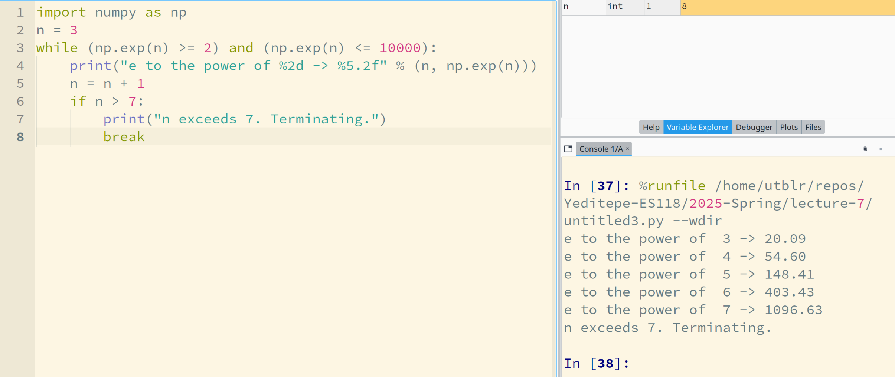

This image's author is Olegalexandrov and published under public domain
This image's author is Tokuchan, and licensed under Attribution-ShareAlike 3.0 Unported DEED
for" loopfor loop is used for this goalfor INDEX in SEQUENCE:
CODE-BLOCK
INDEX: the iteration variable that respectively holds a value in the SEQUENCESEQUENCE: an iterable objectCODE-BLOCK: the section evaluated on every loop iteration
Nesting two for loops:
Compute \[c = \sum^{1000}_{i = 1} i\]
You're given exam grades. \[G = \{40, 54, 90, 70, 80\}\]
Your aim is to calculate the average.
Let's see the all combinations of two flipped coins,
while" loop
A while loop is used to execute a code block until the given condition is NO longer satisfied.
while CONDITION:
CODE-BLOCK
Let us find all powers of 2 below 10000
break" command
break terminates the execution of the loop.
Write a Python program that prints all the values of \(e^{n}\) while satisfying \(2 \leq e^{n} \leq 10000\). Use a while loop and include a break statement when \(n\) exceeds 7.

continue" command
continue jumps to the next iteration in the loop.
{kind=link}
{kind=link}